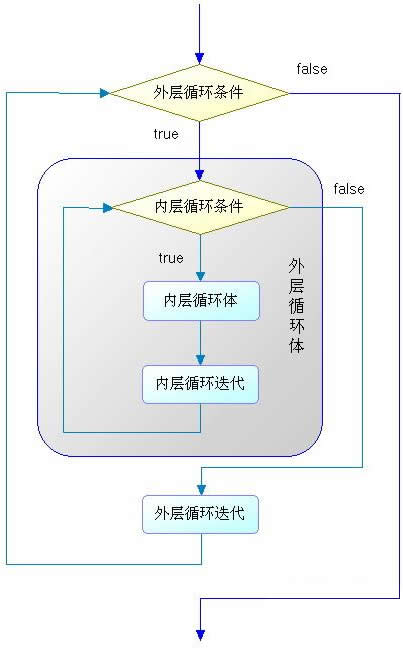

首页 > Java教程 > Java流程控制语句
Java for循环嵌套
和其他编程语言一样，Java 允许循环嵌套。如果把一个循环放在另一个循环体内，那么就可以形成嵌套循环。
嵌套循环既可以是 for循环嵌套 while 循环，也可以是 while 循环嵌套 do-while 循环 …… 即各种类型的循环都可以作为外层循环，也可以作为内层循环。
当程序遇到嵌套循环时，如果外层循环的循环条件允许，则开始执行外层循环的循环体，而内层循环将被外层循环的循环体来执行——只是内层循环需要反复执行自己的循环体而已。
当内层循环执行结束，且外层循环的循环体执行结束时，则再次计算外层循环的循环条件，决定是否再次开始执行外层循环的循环体。
根据上面分析，假设外层循环的循环次数为 n 次，内层循环的循环次数为 m 次，那么内层循环的循环体实际上需要执行 n×m 次。嵌套循环的执行流程如图 1 所示。
从图 1 来看，嵌套循环就是把内层循环当成外层循环的循环体。当只有内层循环的循环条件为 false 时，才会完全跳出内层循环，才可以结束外层循环的当次循环，开始下一次循环。下面是一个使用嵌套循环输出九九乘法表实例。
实际上，嵌套循环不仅可以是两层嵌套，而且可以是三层嵌套、四层嵌套 …… 不论循环如何嵌套, 总可以把内层循环当成外层循环的循环体来对待，区别只是这个循环体里包含了需要反复执行的代码。
关于必须掌握以及面试中经常遇到的冒泡排序，大家可以参考《Java冒泡排序》一节，前提是已经了解了数组的用法。
嵌套循环既可以是 for循环嵌套 while 循环，也可以是 while 循环嵌套 do-while 循环 …… 即各种类型的循环都可以作为外层循环，也可以作为内层循环。
当程序遇到嵌套循环时，如果外层循环的循环条件允许，则开始执行外层循环的循环体，而内层循环将被外层循环的循环体来执行——只是内层循环需要反复执行自己的循环体而已。
当内层循环执行结束，且外层循环的循环体执行结束时，则再次计算外层循环的循环条件，决定是否再次开始执行外层循环的循环体。
根据上面分析，假设外层循环的循环次数为 n 次，内层循环的循环次数为 m 次，那么内层循环的循环体实际上需要执行 n×m 次。嵌套循环的执行流程如图 1 所示。

图 1 嵌套循环的执行流程
图 1 嵌套循环的执行流程
从图 1 来看，嵌套循环就是把内层循环当成外层循环的循环体。当只有内层循环的循环条件为 false 时，才会完全跳出内层循环，才可以结束外层循环的当次循环，开始下一次循环。下面是一个使用嵌套循环输出九九乘法表实例。
public static void main(String[] args) {
System.out.println("乘法口诀表：");
// 外层循环
for (int i = 1; i <= 9; i++) {
// 内层循环
for (int j = 1; j <= i; j++) {
System.out.print(j + "*" + i + "=" + j * i + "\t");
}
System.out.println();
}
}
运行上面程序，看到如下运行结果:
乘法口诀表：
1*1=1
1*2=2 2*2=4
1*3=3 2*3=6 3*3=9
1*4=4 2*4=8 3*4=12 4*4=16
1*5=5 2*5=10 3*5=15 4*5=20 5*5=25
1*6=6 2*6=12 3*6=18 4*6=24 5*6=30 6*6=36
1*7=7 2*7=14 3*7=21 4*7=28 5*7=35 6*7=42 7*7=49
1*8=8 2*8=16 3*8=24 4*8=32 5*8=40 6*8=48 7*8=56 8*8=64
1*9=9 2*9=18 3*9=27 4*9=36 5*9=45 6*9=54 7*9=63 8*9=72 9*9=81
实际上，嵌套循环不仅可以是两层嵌套，而且可以是三层嵌套、四层嵌套 …… 不论循环如何嵌套, 总可以把内层循环当成外层循环的循环体来对待，区别只是这个循环体里包含了需要反复执行的代码。
关于必须掌握以及面试中经常遇到的冒泡排序，大家可以参考《Java冒泡排序》一节，前提是已经了解了数组的用法。
关注公众号「站长严长生」，在手机上阅读所有教程，随时随地都能学习。内含一款搜索神器，免费下载全网书籍和视频。

微信扫码关注公众号